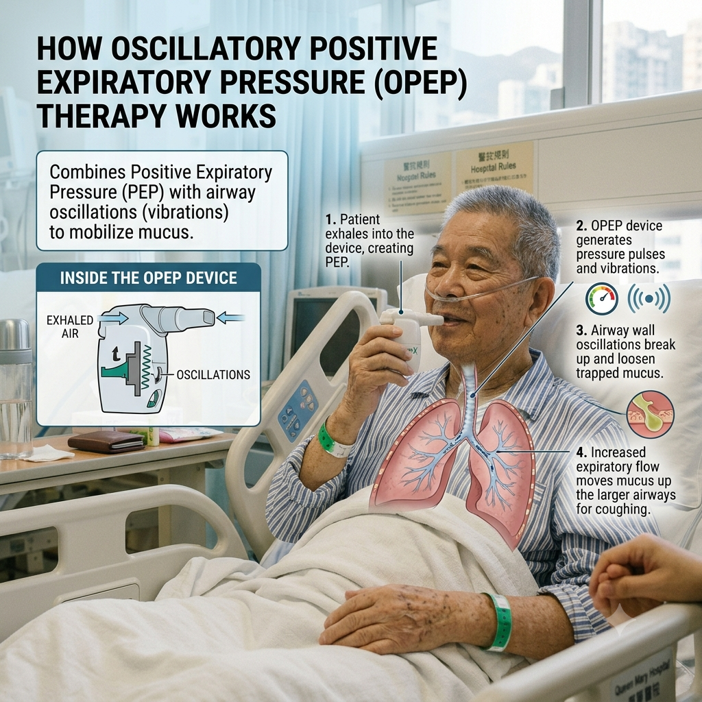

Explaination:
Option 1 Check Inflammatory markers
Checking the inflammatory markers such as WCC, CRP, or even ESR may provide an indication on the severity of the infection.
Furthermore, by checking the trend of the inflammatory markers, you may see how the patient is currently responding to current treatment.
If the inflammatory markers are decreasing, it may indicate that the patient is responding well to the treatment. However, if the inflammatory markers are increasing, it may mean that the patient is not responding to the current treatment, or that there is a new source of infection for investigation.
Acute vs. Chronic: A high CRP with a normal ESR usually points to a new, acute infection. If ESR is elevated but CRP is normal, it may indicate a long-standing or chronic inflammatory process.
Q1. Option 2 Check CXR
The patient presented with increased respiratory distress, and had an increased oxygen demand when first admitted.
This Chest X-ray shows hyperinflated lungs, which is typically seen in patients with COPD. As COPD causes airway obstruction and a decrease in lung elasticity, air may become trapped in the lungs. In a CXR with lung hyperinflation, you may observe flattened diaphragms, increased rib counts, or even widened intercostal spaces.
Having a CXR on hand may provide you with an indication for how congested their lung may be, which allows you to have an estimate on how likely they are to be in sputum retention. After seeing the latest CXR, you may also choose to compare this film with the last film, allowing you to have a comparison on whether there is a difference in lung consolidation.
A CXR also allows the doctor to screen out any more acute conditions or life-threatening conditions such as pneumothorax or pleural effusion.
Q1. Option 3 Auscultation
Auscultating the patient allows you to have a more comprehensive respiratory assessment. Assessing the air entry, and the type of transmitted sound they have (if any), can help guide your treatment.
Auscultation may help you identify where secretions may be trapped. This may help to guide any positioning, vibrations or percussion that you may choose to use.
Furthermore, it may also provide you with an indication of how much sputum the patient is retaining. If the patient is in excessive sputum retention, suction may be indicated.
Q1. Option 4 IPMOE (Current medications)
Checking the current medications would allow you to have a picture of the doctor's differential diagnosis. Furthermore, it may give you an indication on the doctor's discharge plan. For example, if a patient was initially put on IV antibiotics, and later changed to oral antibiotics, it may be an indication that the patient is responding well to treatment, and that the doctor is aiming to discharge the patient home soon.
If the patient is on a bronchodilator, checking when the medication was last taken may also give you a timeframe of the optimal time to see the patient. Bronchodilators help to open up airways by relaxing the surrounding muscles. Doing airway clearance techniques (eg. percussion, vibrations, huffing) around 10-15 mins after the use of bronchodilators may prove to be more effective in sputum clearance.
Q2. Option 1 Breathing and coughing exercise
In acute respiratory conditions, excessive, thick mucus may be blocking the patient's airway. By directing a coughing exercise, the high expiratory flow may cause a shearing force, clearing the airway.
On the other hand, you may choose to teach the patient a huffing technique, which is a gentler way to clear mucus. Huffing allows one to loosen sputum from their airways, but at the same time keeps your airways open, which may be more beneficial for patients with COPD.
Teaching the patient breathing techniques such as pursed-lip breathing may also be beneficial. Pursed-lip breathing allows for more PEEP, keeping the airways open for longer during expiration. This helps to reduce the retention of carbon dioxide.
Q2. Option 2 Use a PEP/OPEP device for airway clearance
Patients who present with AECOPD often present with increased sputum production and retention, hence indicating a prescription of Airway Clearance Techniques (ACTs).
A standard Positive Expiratory Pressure (PEP) device provides resistance upon exhalation. This resistance helps to keep airways open, allowing air to travel through the Pores of Kohn and Canals of Lambert (Collateral channels of the lungs). The collateral ventilation allows the air to travel behind mucus plugs, helping to clear the secretion. As the secretion is cleared, the work of breathing is reduced. This allows for an improved respiratory rate and decreased fatigue.
On the other hand, Oscillatory Positive Expiratory Pressure (OPEP) devices may be used. These devices combine an expiratory pressure with high frequency vibrations, which allows for better mucus clearance.
Common OPEP devices that may be found in a hospital setting include the Akapella and Aerobika. Similarly, a common PEP device found in the hospital setting is the TheraPEP.

Q2. Option 3 Mobility training & Option 4 Keep bed rest
Although the patient's current inflammatory markers are slightly elevated, they are not uncontrolled sepsis. There is no absolute contraindication for mobilization.
Early mobilization may prevent physical decline, as well as lowering the risk for developing DVT/PE.
Physical movement may also help with sputum clearing. Patients will naturally take deeper breaths when mobilizing, which may help create the mechanical shearing force needed to loosen sputum.
Sitting or standing also allows for better lung expansion. Being in a “position of ease” may also help to offload the diaphragm, recruiting accessory breathing muscles.
Case creator: Ms Elaine Liu, Ms Kiho Masui